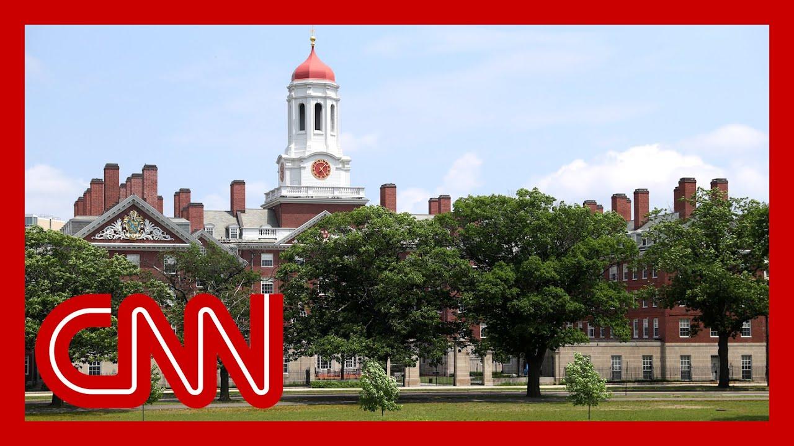

【哈佛起诉特朗普政府以阻止国际学生禁令】
Summary: Harvard University is suing the Trump administration over its ban on international student admissions, seeking an immediate court block on the Department of Homeland Security's order.
摘要： 哈佛大学对特朗普政府禁止国际学生入学的政策提起新诉讼，要求法官立即阻止国土安全部的行动。

⏱️ Estimated Reading Time: 13 min
Harvard is hitting back at the Trump administration with a new lawsuit following the government's ban on international admissions to the university.
哈佛大学对特朗普政府禁止国际学生入学的政策提起新诉讼。
The school, now asking a judge to immediately block the move by the Department of Homeland Security.
该校正要求法官立即阻止国土安全部的行动。
Under the order, those students already enrolled must now transfer to another school or lose their legal status here in the United States, something one Chinese student describes as devastating.
根据该命令，已入学的学生必须转学或失去在美国的合法身份，一名中国学生称此举令人崩溃。
Listen. So basically it's a mixture of like shock then to kind of just, you know, you know, devastation, you know, like frustration and then uncertainty.
听着，这基本上是一种混合情绪，先是震惊，然后是崩溃、沮丧和不确定性。
Anxiety. You know, I mean, it's a combination of all of those feelings, I would say, among students in the community right now.
焦虑。我认为现在学生群体中充斥着所有这些情绪。
Department of Homeland Security Secretary Kristi Noem says the order comes after Harvard refused to turn over records of foreign students.
国土安全部部长克里斯蒂·诺姆表示，该命令是因为哈佛拒绝提交外国学生记录。
And she warns other universities should take notice.
她还警告其他大学应引以为戒。
Let's bring in CNN crime and justice correspondent Kaitlan Collins.
现在请CNN犯罪与司法记者凯特兰·柯林斯加入讨论。
She's here with me in the Situation Room.
她正在战情室与我一起。
Caitlin, what more can you tell us about this lawsuit?
凯特兰，关于这起诉讼你还有什么可以告诉我们的？
Well, Wolf, this may be the big one.
沃尔夫，这可能是场重大诉讼。
The administration of Donald Trump versus one of the most significant cultural institutions in the United States.
这是特朗普政府对阵美国最重要的文化机构之一。
Academic institution, Harvard University.
即学术机构哈佛大学。
This is a case where Harvard says what the administration has already done yesterday by revoking its ability to have foreign students as part of its programs on campus, that it is an immediate and devastating effect to this university.
哈佛称，政府昨日撤销其招收外国学生的资格，已对该校造成直接且毁灭性的影响。
They say there are more than 7000 students on their campus with visas, many of them expecting to come back to campus in the summer and fall semesters starting now, essentially starting in the next couple weeks.
该校表示，目前有7000多名持签证学生，许多人计划在未来几周开始的夏秋学期返校。
In the next couple of months, and that the immediate effect is going to be on academic programs, research laboratories, clinics and courses that Harvard has.
未来几个月内，哈佛的学术项目、研究实验室、诊所和课程将受到直接影响。
They say there's going to be thrown into disarray.
他们表示这将导致混乱。
And if Harvard loses its ability to have international students, if they must either transfer out of the university or leave the United States, which they say what?
如果哈佛失去招收国际学生的资格，学生必须转学或离开美国，他们会说什么？
That's what the effect is right now without international students.
这就是当前没有国际学生的影响。
Harvard is not Harvard.
哈佛将不再是哈佛。
So this suit is very fast moving.
这起诉讼进展迅速。
The administration is saying that they should be able to do this, because allowing a university to enroll foreign students is a privilege, not a right.
政府称他们有权这样做，因为允许大学招收外国学生是特权而非权利。
The administration is very unhappy with Harvard over its allowance of having protests on its campus, things like that.
政府对哈佛允许校园抗议等活动非常不满。
The Department of Homeland Security does have a statement in response to the lawsuit.
国土安全部已就诉讼发表声明。
So far. They say this lawsuit seeks to kneecap the president's constitutional vested powers under article two.
声明称该诉讼试图削弱宪法第二条赋予总统的权力。
What that means the president's the president.
这意味着总统就是总统。
He should be able to do what he wants here on visas, immigration, even related to this university.
他应有权在签证、移民甚至涉及该大学的事务上按意愿行事。
Harvard, in response, says this retaliatory action threatens serious harm to the Harvard community and our country and undermines Harvard's academic and research mission.
哈佛回应称，这一报复行为严重危害哈佛社区和国家，损害其学术与研究使命。
Their argument in court is that it's a constitutional encroachment of their ability to decide what their curriculum is and what they do as a university.
他们在法庭上辩称，这侵犯了宪法赋予的自主决定课程和办学方针的权利。
This has just a few minutes ago, I just looked already been assigned to a judge.
几分钟前我刚看到此案已分配给法官。
Judge Allison Burrows, she's an Obama appointee on the federal court in Massachusetts, and we are waiting to see exactly what happens next.
马萨诸塞州联邦法院的奥巴马任命法官艾莉森·伯罗斯将审理此案，我们正等待后续进展。
There could be a lot here, a lot quickly.
事态可能迅速升级。
Soon as you hear, let us know.
请随时告知我们最新消息。
This is obviously a very significant development.
这显然是重大进展。
And when we're talking about foreign students now being barred from attending Harvard University, according to the Trump administration, we're talking about foreign students from all over the world, not just from China or from India, but from friendly allied countries in Europe or even Israel, for example.
根据特朗普政府政策，被禁止进入哈佛的包括全球各地留学生，不仅来自中国或印度，还有欧洲盟国甚至以色列等国。
No more Israeli students would be allowed to go to Harvard, right?
以色列学生也将被禁止进入哈佛，对吗？
That's right. And the way that Harvard describes it, it is it's literally everybody with an F1 or a J1 visa.
没错。哈佛表示这实际上影响所有持F1或J1签证的学生。
So the students that are coming in and studying there, they say it also doesn't just affect those people on campus.
该校称这不仅影响在校学生。
More than 7000, Harvard says.
哈佛表示超过7000人受影响。
But it also affects their families, their children, more than 300 people that they say are now in immediate jeopardy and have to make a choice.
还包括其家人子女等300多人面临紧迫抉择。
And we've already heard, as there was, that student at the that you referred to earlier that was speaking, that they are very, very horrified about what is happening here.
正如之前那位学生所言，他们对当前事态感到极度震惊。
Yeah. They can't believe this is happening here in the United States of America.
是的，他们无法相信这竟发生在美国。
All right. Caitlin Pollitz, thank you very much for that update.
好的，凯特兰·波利茨，感谢你的最新报道。
As soon as you get word from the court, let us know the latest on that.
请随时告知法庭最新进展。
Right now we're joined by the former president of Harvard, Harvard University.
现在哈佛大学前校长加入我们。
He was the president for five years, Larry Summers.
担任校长五年的拉里·萨默斯。
Larry, thanks so much for joining us.
拉里，非常感谢你的参与。
I know you call this move by the Trump administration against Harvard.
我知道你称特朗普政府对哈佛的行动是暴政。
And I'm quoting you now the stuff of tyranny.
引用你的原话"暴政行径"。
And you say Harvard must start resisting.
你说哈佛必须开始抵抗。
The university just announced it's suing to try to block this order from the Trump administration.
该校刚宣布起诉以阻止特朗普政府的命令。
How would you respond if you were still leading Harvard?
如果你仍在领导哈佛会如何应对？
University's doing just the right thing.
校方正采取正确行动。
This is extortion.
这是勒索。
It's a vendetta.
这是报复。
Using all powers of the government because of a political argument with Harvard.
因政治分歧动用政府全部权力针对哈佛。
It is violating the First Amendment.
这违反第一修正案。
It is also violating all the laws we have regarding administrative, procedures.
也违反所有行政程序法。
Look, Wolf, I've been on your show many times, and I've often been critical of Harvard on aspects relating to identity politics, anti-Semitism, and much more.
沃尔夫，我多次做客你的节目，常批评哈佛在身份政治、反犹主义等方面的问题。
But that's not what this is about.
但这次性质不同。
This is about a vicious attack to pursue a personal agenda and the consequences whether it's students or dissidents from tyrannies who are going to be sent home and possibly be imprisoned, whether it's labs that are fighting cancer and diabetes that are going to lose key people, whether it's 7000 people, some small fraction of whom are going to go on to be prime ministers of countries who've been turned into enemies of, the United States, whether it's the way in which America is seen when it expels people whose dream was to come to Harvard, to study.
这是为实现个人议程的恶意攻击，后果包括：学生和专制国家的异见者可能被遣返监禁；抗击癌症和糖尿病的研究室将流失关键人员；7000人中部分未来可能成为他国总理的人将与美国为敌；驱逐哈佛追梦者损害美国形象。
This is madness.
这太疯狂了。
the president and his administration have made a big deal, and they've been right about Israel and anti-Semitism.
总统及其政府在以色列和反犹问题上立场正确。
Sending every Israeli student out of Harvard is much more discriminatory against Israelis and is much more discriminatory against Jews than anything they have complained about.
但驱逐所有以色列学生比他们谴责的任何行为都更具歧视性。
I have thought I was done being surprised by how low the Trump administration, would go, but I am surprised by what has happened.
我曾以为不会再对特朗普政府的底线感到惊讶，但这次仍令我震惊。
I am proud of Harvard's president, Alan Garber, for his leadership and for this lawsuit.
我为校长艾伦·加伯的领导力和此次诉讼感到骄傲。
If we are a country of law, and I deeply believe we still are, Harvard will prevail in, this lawsuit, and I hope and trust it will prevail quickly.
如果我们仍是法治国家（我深信如此），哈佛将胜诉且有望速胜。
Think about the families, coming from all over the world for our graduation.
想想那些为参加毕业典礼从全球赶来的家庭。
a week, from now, people being stopped at airports.
一周后这些人可能在机场被拦。
People who devoted their lives to making it possible for their kids to go to Harvard and to see them graduate.
那些倾尽一生让孩子就读哈佛并见证毕业的人。
Now, being told that somehow this is all being stopped because of a vendetta against, I'm sorry, I just can't quite believe that this is happening.
现在却因报复被告知一切终止，恕我直言，我难以相信这正在发生。
It certainly is hard to believe.
确实难以置信。
One international Harvard student, Larry, says he and other foreign students are now feeling.
一位哈佛国际学生表示，他和同学们正感到"纯粹的恐慌"。
And I'm quoting now, pure panic.
引用原话"纯粹的恐慌"。
Now you're the former president of Harvard University.
作为哈佛前校长，
What message do you have for them?
你想对这些学生说什么？
For those students who are now being kicked out of the United States?
对那些将被驱逐出美国的学生？
Everyone at Harvard has, your back.
全体哈佛人支持你们。
We are going to fight in every way we can in the courts with the support that can be provided.
我们将在法庭全力抗争并提供一切支持。
financially, to make this work for you.
包括经济支持。
The president of the United States is a very tough enemy.
美国总统是强大对手。
And so we can't promise what every result is going to be.
我们无法承诺结果。
But know that there are things where there's arguments and division in the university up opposite.
但要知道，校内虽有分歧，
Opposition to this is not something where there is any, division.
对此事的反对是全校一致的。
And I think that I am still hopeful that justice and common sense, will prevail.
我仍希望正义与常识终将胜利。
China says this ban will only tarnish America's image and reputation around the world.
中国称该禁令只会损害美国的国际形象。
And on Chinese social media, people who wrote things like, quote, it's fun to watch them destroy their own strength.
中国社交媒体上有评论称"看他们自毁实力很有趣"。
And recruiting international students is the main way to attract top talent.
招收国际学生是吸引顶尖人才的主要途径。
What kind of long term damage could this move have on the US?
这对美国会造成何种长期损害？
Look, we have always thought that a huge strength of the United States was what my late colleague Joe Nye called soft power.
我们始终认为美国的巨大优势是已故同事约瑟夫·奈提出的"软实力"。
The power of our example, the fact that people from all over the world didn't want to go study in China, they wanted to go study The people, the fact that the books, the movies, the songs that we were, the technologies that we were the source of attraction for people from all over the world.
我们的榜样力量、全球学子首选美国而非**的事实、我们的文化科技对世界的吸引力。
When we do our very best to undo that, when we emulate Chinese totalitarianism, where the government is censoring and stomping on universities, we are ceding one of our greatest advantages.
当我们竭力破坏这些优势，效仿**极权主义打压大学时，就是在放弃最大优势之一。
I cannot imagine a greater strategic gift that we could be giving to China, that we could be giving to the enemies of freedom around the world.
我想不出还有比这更能助长**和全球自由之敌的战略礼物。